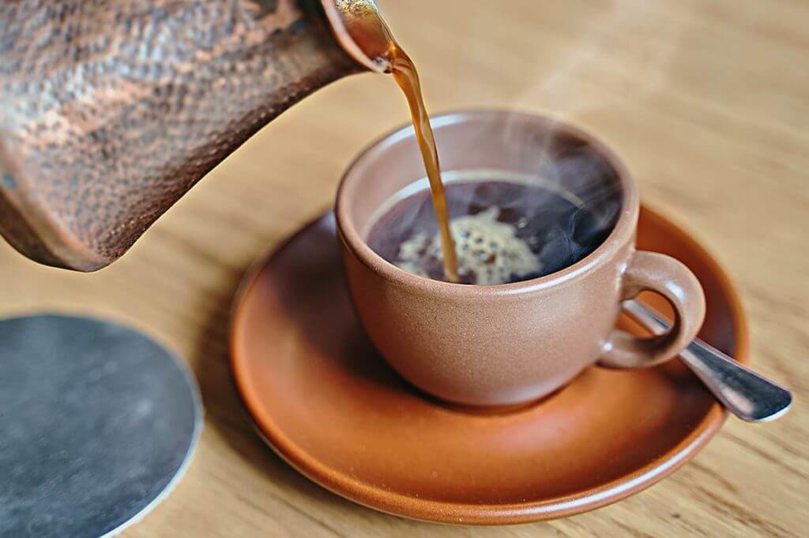

Coffee Shop oferece bebidas de café de classe mundial e uma variedade de serviços relacionados ao café.
Aqui estão apenas alguns deles.
TORREFAÇÃO DE GRÃOS DE CAFÉ
R$29.00
Este serviço de torrefacção clássico e tradicional é perfeito se pretender que o seu café seja preparado da forma correcta ou para experimentar o sabor do café.
COSTA RICA CAFÉ GOURMET
R$35.00
Esta mistura de torra média tem um perfil de sabor complexo de tons terrosos misturados com limão. Também possui incríveis características frutadas e florais.
